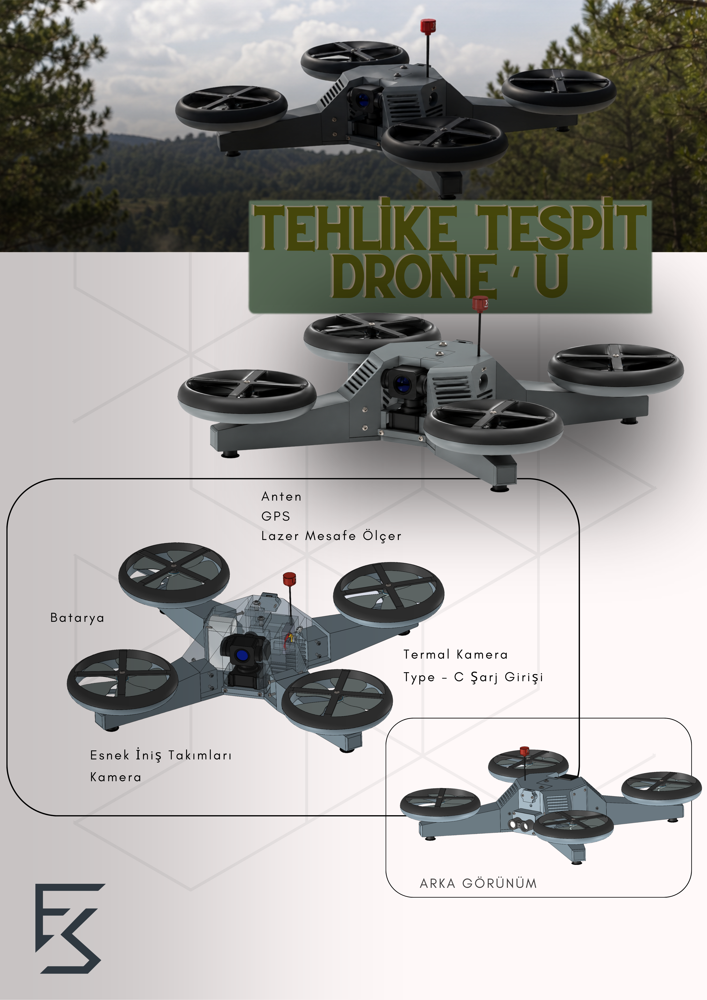

Simurg Tehlike Tespit Drone'u, personelin intikali öncesinde riskli bölgelerin keşif ve değerlendirmesinin yapılması, olası tehditlerin tespit edilmesi ve genel operasyon güvenliğinin sağlanması amacıyla geliştirilmiştir.
Mühendislik ve Tasarım Süreci
Şasi rijitliği için hafif CFRP, yüksek stres binen bağlantı noktalarında mukavemetli Alüminyum 7075-T6 ve kimyasal dezenfeksiyona dayanıklı dış kabukta ise PEEK malzeme tercih edilerek operasyonel verimlilik maksimuma çıkarılmıştır.
Sistem mimarisi; çevresel dayanım için MIL-STD-810H, elektronik harp ve elektromanyetik uyumluluk için MIL-STD-461G ve NATO havacılık standartlarına uyum için STANAG 4703 gereksinimleri göz önünde bulundurularak tasarlanmıştır.
Su ve toprak ile temas eden yüzeyler için AISI304 malzeme kullanılarak dayanıklılığın arttırılması hedeflenmiştir.
Bu proje Gazi Üniversitesi - Endüstriyel Tasarım Mühendisliği bitirme tezi kapsamında hazırlamıştır.

Eklenmiş olan video Simurg'un çalışma prensibini ve kullanım amacını göstermek amacıyla yapay zeka ile oluşturulmuştur. Ürüne ait CAD tasarımı bana aittir.